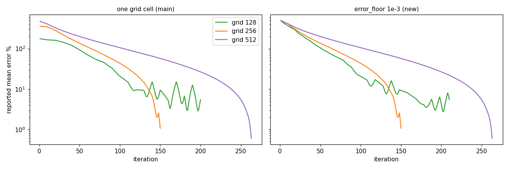
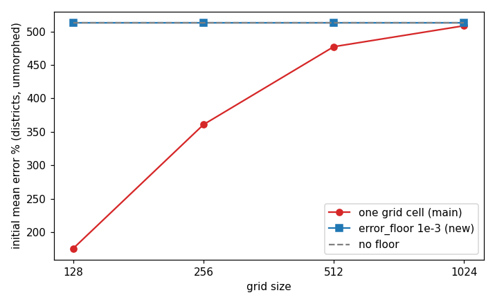

The error metrics no longer depend on the grid: the initial error of the districts is 513 % on every grid (176 % to 509 % on main), runs on the bundled states and districts are unchanged, and the counties report an error close to the true one instead of 4.5 % against 58.5 %.
make_figures.py regenerates the figures and data/tables.md; the counties part runs when COUNTIES_PARQUET points at a GeoDataFrame file with GEOID, total_votes and geometry.
| grid | regions below the one-cell floor (current or target) | one-cell floor (main) | error_floor 1e-3 (new) | no floor |
|---|---|---|---|---|
| 128 | 203 of 432 | 176 % | 513 % | 513 % |
| 256 | 115 of 432 | 361 % | 513 % | 513 % |
| 512 | 33 of 432 | 477 % | 513 % | 513 % |
| 1024 | 6 of 432 | 509 % | 513 % | 513 % |
| input | grid | floor | status | iterations | reported mean % | reported max % | true max % | seconds |
|---|---|---|---|---|---|---|---|---|
| states | 128 | one cell (main) | converged | 63 | 1.21 | 8.30 | 7.75 | 0.2 |
| states | 128 | 1e-3 (new) | converged | 63 | 1.21 | 8.30 | 7.75 | 0.2 |
| states | 256 | one cell (main) | converged | 113 | 0.32 | 4.38 | 4.36 | 0.2 |
| states | 256 | 1e-3 (new) | converged | 113 | 0.32 | 4.38 | 4.36 | 0.2 |
| states | 512 | one cell (main) | converged | 214 | 0.50 | 7.28 | 7.27 | 0.6 |
| states | 512 | 1e-3 (new) | converged | 214 | 0.50 | 7.28 | 7.27 | 0.6 |
| districts | 256 | one cell (main) | converged | 150 | 1.07 | 8.00 | 8.05 | 0.7 |
| districts | 256 | 1e-3 (new) | converged | 150 | 1.07 | 8.00 | 8.05 | 0.8 |
| districts | 512 | one cell (main) | converged | 263 | 0.60 | 9.49 | 9.46 | 1.6 |
| districts | 512 | 1e-3 (new) | converged | 263 | 0.60 | 9.49 | 9.46 | 1.7 |
Identical status, iterations and errors in every row: no state or district target is below 1e-3 of the mean target area.
Counties (3108, total votes, area_scale 1e-6, 300 iterations):
On main the reported mean error (4.5 % at grid 256, 8.0 % at 512) was far below the true mean error of the output areas (58.5 % and 26.4 %), because most county targets are below one grid cell. With the new floor the reported mean error (58.6 % and 37.2 %) is close to the truth. Floors of 1e-4 and 0 change the reported mean error at grid 256 by under 3 points, so the default is not sensitive. The runs still stall at grid 256 and reach n_iter at 512, as on main: the counties plateau is not a metric problem.
A diagnostic for regions below one cell (the grid cannot resolve them) is part of the multiresolution trigger work (#93).

Reported mean error of the districts at grids 128, 256 and 512. On main (left) the curves start at different values and look as if a coarse grid begins closer to the target; with the new floor (right) they start together.

Initial mean error of the unmorphed districts on each grid: the one-cell floor of main (red) changes with the grid, the new floor (blue) is the same on every grid and equals the error without a floor (gray).